| term | estimate | std.error | statistic | p.value |
|---|---|---|---|---|
| (Intercept) | 1329.7165501 | 15.8008996 | 84.15448 | 0 |
| INCTOT | 0.0057046 | 0.0002248 | 25.38011 | 0 |
Analysis
Here we provide a detailed analysis using more sophisticated statistics techniques.
The question we want to address
- The primary focus of this research is to explore the relationship between an individual’s total income and their rental expenditures.
- The analysis aims to determine how rental spending adjusts in response to changes in income levels.
- Both linear and nonlinear models are employed to elucidate the connection between these variables.
- Additionally, the study considers racial differences, examining how the coefficients vary among different racial groups.
- A time series regression model is utilized to account for temporal variations in this relationship.
Models and Inferences (First dataset)
Outline
- Simple Linear Regression Model (Based on 2022 Data)
- Multiple Linear Regression Model (Based on 2022 Data)
- Log-Log Regression Model (Utilizing the 2022 Dataset)
- Log-Log Regression Model with interaction terms (Utilizing the 2022 Dataset)
1. Simple Linear Regression Model (Based on 2022 Data)
Model Overview:
- This model explores the relationship between the predictor (income) and the response (rent), providing insights into their potential correlation. Detailed analysis and visualizations are discussed in Class Blog 4.
Model Findings:
- The model suggests that an increase of $1,000 in income is associated with an average increase of approximately 5.3213 units in the rent variable.
Statistical Significance:
| r.squared | adj.r.squared | sigma | statistic | p.value | df | logLik | AIC | BIC | deviance | df.residual | nobs |
|---|---|---|---|---|---|---|---|---|---|---|---|
| 0.1108854 | 0.1107132 | 884.7833 | 644.1498 | 0 | 1 | -42390.52 | 84787.04 | 84806.69 | 4043376235 | 5165 | 5167 |
- The coefficients, including the primary predictor and the intercept, have shown statistical significance, indicating reliable estimations.
Model Discussion:
- Although this preliminary model sheds light on the relationship between income and rent, further analysis should include additional variables to enhance understanding and accuracy.
2. Multiple Linear Regression Model (Based on 2022 Data)
Model Overview:
- This model enhances the simple linear regression by incorporating additional confounding variables to refine our analysis.
- For more details, refer to Class Blog 4.
- This expanded model builds upon the initial simple linear regression framework.
Variable Selection:
- A correlation matrix was used to identify control variables and to detect potential multi-collinearity issues.
| INCTOT | ROOMS | NFAMS | AGE | FTOTINC | RENTGRS | |
|---|---|---|---|---|---|---|
| INCTOT | 1.0000000 | -0.0149409 | -0.0313099 | -0.0077964 | 0.7282638 | 0.3329946 |
| ROOMS | -0.0149409 | 1.0000000 | 0.1631221 | -0.0439707 | 0.1083906 | 0.1406264 |
| NFAMS | -0.0313099 | 0.1631221 | 1.0000000 | -0.1405046 | -0.0924716 | 0.0881204 |
| AGE | -0.0077964 | -0.0439707 | -0.1405046 | 1.0000000 | -0.0768613 | -0.0870537 |
| FTOTINC | 0.7282638 | 0.1083906 | -0.0924716 | -0.0768613 | 1.0000000 | 0.4448424 |
| RENTGRS | 0.3329946 | 0.1406264 | 0.0881204 | -0.0870537 | 0.4448424 | 1.0000000 |
- After fitting the multiple linear regression (MLR) model, ‘Kitchen’ was removed due to its statistical insignificance, indicated by a high p-value. ‘Employment Status’, although not as critical, also showed a non-significant p-value and is suspected to interact with variables like ‘Income’ or ‘FTOTINC’. This interaction will be explored further.
- A review of multicollinearity prompted the removal of ‘FTOTINC’ to prevent model overfitting.
| GVIF | Df | GVIF^(1/(2*Df)) | |
|---|---|---|---|
| INCTOT | 2.317240 | 1 | 1.522248 |
| KITCHEN | 1.023481 | 1 | 1.011673 |
| ROOMS | 1.108739 | 1 | 1.052967 |
| NFAMS | 1.111046 | 1 | 1.054062 |
| AGE | 2.074406 | 1 | 1.440280 |
| MARST | 1.856902 | 5 | 1.063846 |
| RACE | 1.198063 | 8 | 1.011358 |
| EMPSTAT | 1.576945 | 2 | 1.120609 |
| FTOTINC | 2.385884 | 1 | 1.544631 |
| REGION_CLASSIFIED | 1.130442 | 3 | 1.020645 |
- The selection and validation of control variables were systematically conducted.
Inference:
| r.squared | adj.r.squared | sigma | statistic | p.value | df | logLik | AIC | BIC | deviance | df.residual | nobs |
|---|---|---|---|---|---|---|---|---|---|---|---|
| 0.2317473 | 0.2284616 | 824.1282 | 70.53243 | 0 | 22 | -42013.05 | 84074.11 | 84231.31 | 3493739342 | 5144 | 5167 |
Inference:
| term | estimate | std.error | statistic | p.value |
|---|---|---|---|---|
| (Intercept) | 192.4680339 | 125.4185543 | 1.5346057 | 0.1249422 |
| INCTOT | 0.0051585 | 0.0002198 | 23.4696962 | 0.0000000 |
| ROOMS | 62.4778275 | 5.8448723 | 10.6893401 | 0.0000000 |
| NFAMS | 88.3019863 | 16.3854438 | 5.3890506 | 0.0000001 |
| AGE | -3.0743841 | 0.8875968 | -3.4637171 | 0.0005371 |
| MARSTMarried, spouse absent | 94.9406492 | 75.3701889 | 1.2596578 | 0.2078500 |
| MARSTMarried, spouse present | 270.2800166 | 38.1022679 | 7.0935414 | 0.0000000 |
| MARSTNever married/single | 133.7032021 | 39.1610925 | 3.4141847 | 0.0006447 |
| MARSTSeparated | -12.8753038 | 72.7354147 | -0.1770156 | 0.8595031 |
| MARSTWidowed | 165.1710342 | 58.5735588 | 2.8198907 | 0.0048224 |
| RACEBlack/African American | 311.1982598 | 110.5848687 | 2.8141125 | 0.0049098 |
| RACEChinese | 442.5579390 | 144.9951127 | 3.0522266 | 0.0022831 |
| RACEJapanese | 359.8914300 | 231.9929731 | 1.5513032 | 0.1208906 |
| RACEOther Asian or Pacific Islander | 497.1734167 | 116.4670507 | 4.2687903 | 0.0000200 |
| RACEOther race, nec | 343.5788878 | 112.1486813 | 3.0636017 | 0.0021982 |
| RACEThree or more major races | 498.8640790 | 156.7572625 | 3.1823985 | 0.0014693 |
| RACETwo major races | 379.9573896 | 111.1079215 | 3.4197147 | 0.0006317 |
| RACEWhite | 390.0560268 | 107.1130784 | 3.6415350 | 0.0002737 |
| EMPSTATNot in labour force | -16.1759159 | 33.5495389 | -0.4821502 | 0.6297198 |
| EMPSTATUnemployed | 55.6707902 | 69.1339994 | 0.8052592 | 0.4207073 |
| REGION_CLASSIFIEDNORTHEAST | 404.8892183 | 39.7506791 | 10.1857183 | 0.0000000 |
| REGION_CLASSIFIEDSOUTH | 253.5626804 | 34.6492894 | 7.3179763 | 0.0000000 |
| REGION_CLASSIFIEDWEST | 719.8277912 | 36.9311828 | 19.4910570 | 0.0000000 |
- The analysis reveals that a unit increase in total income (INCTOT) is associated with an average increase of 0.0005482 in gross rent (RENTGRS), assuming other variables are constant.
Statistical Performance:
- The R-squared value of 0.28 indicates that approximately 28% of the variance in the dependent variable (gross rent) is explained by the model, which is a considerable improvement compared to the simple linear regression.
- The adjusted R-squared value of 0.2807292 closely mirrors the R-squared value, suggesting that the additional predictors are effectively contributing valuable information.
- A F-statistic value of 98.57 and a p-value of 0 confirm the statistical significance of the model, suggesting that the regression results are highly unlikely to occur by chance.
Discussion of the Model:

- The residual plot shows signs of heteroskedasticity, as the spread of residuals increases with the fitted values. The presence of patterns in the residuals suggests a non-linear relationship between predictors and the response, indicating potential violations of linear model assumptions.
- These issues could be attributed to large values and skewness in the data variables, leading us to consider alternative models, such as a log-log transformation to address these discrepancies.
3. Log-Log Regression Model
Model Overview:
- A thorough explanation is provided in Class Blog 4.
- Predictor and response variables underwent log transformation to correct for right skewness, as elaborated on the data page.
- Density plots were used to identify and remove outliers for a more accurate model.
- A reanalysis was conducted post data cleansing to assess the impact of log-transformed variables.
Inference:
| term | estimate | std.error | statistic | p.value |
|---|---|---|---|---|
| (Intercept) | 5.1300453 | 0.1067311 | 48.0651464 | 0.0000000 |
| log_INCTOT | 0.1334422 | 0.0076099 | 17.5353005 | 0.0000000 |
| ROOMS | 0.0417813 | 0.0036000 | 11.6060404 | 0.0000000 |
| NFAMS | 0.0329669 | 0.0100882 | 3.2678822 | 0.0010907 |
| AGE | -0.0035780 | 0.0005543 | -6.4554553 | 0.0000000 |
| MARSTMarried, spouse absent | 0.1202752 | 0.0463969 | 2.5923119 | 0.0095603 |
| MARSTMarried, spouse present | 0.2037563 | 0.0234393 | 8.6929177 | 0.0000000 |
| MARSTNever married/single | 0.1093599 | 0.0241056 | 4.5366957 | 0.0000058 |
| MARSTSeparated | 0.0317849 | 0.0447714 | 0.7099382 | 0.4777746 |
| MARSTWidowed | 0.1003713 | 0.0360489 | 2.7843077 | 0.0053838 |
| RACEBlack/African American | 0.2424072 | 0.0680509 | 3.5621460 | 0.0003712 |
| RACEChinese | 0.2865844 | 0.0892336 | 3.2116179 | 0.0013280 |
| RACEJapanese | 0.3096517 | 0.1428069 | 2.1683238 | 0.0301798 |
| RACEOther Asian or Pacific Islander | 0.3673317 | 0.0716731 | 5.1251000 | 0.0000003 |
| RACEOther race, nec | 0.2807254 | 0.0690242 | 4.0670562 | 0.0000483 |
| RACEThree or more major races | 0.3548441 | 0.0965187 | 3.6764279 | 0.0002389 |
| RACETwo major races | 0.2827093 | 0.0683784 | 4.1344834 | 0.0000361 |
| RACEWhite | 0.2663832 | 0.0659283 | 4.0405009 | 0.0000541 |
| EMPSTATNot in labour force | -0.0361988 | 0.0222177 | -1.6292740 | 0.1033163 |
| EMPSTATUnemployed | 0.0756027 | 0.0430993 | 1.7541506 | 0.0794642 |
| REGION_CLASSIFIEDNORTHEAST | 0.2785550 | 0.0244342 | 11.4002308 | 0.0000000 |
| REGION_CLASSIFIEDSOUTH | 0.1916896 | 0.0213248 | 8.9890579 | 0.0000000 |
| REGION_CLASSIFIEDWEST | 0.4657014 | 0.0227049 | 20.5110144 | 0.0000000 |
- The model suggests that a 10% increase in income is predicted to raise rent by an average of 13.34%, with all other variables held constant, indicating income’s elasticity effect on rent.
Statistical Performance:
# A tibble: 1 × 12
r.squared adj.r.squared sigma statistic p.value df logLik AIC BIC
<dbl> <dbl> <dbl> <dbl> <dbl> <dbl> <dbl> <dbl> <dbl>
1 0.227 0.223 0.507 68.6 6.81e-267 22 -3813. 7673. 7830.
# ℹ 3 more variables: deviance <dbl>, df.residual <int>, nobs <int>- An adjusted R-squared value of 0.223, while modest, is considered adequate within the complex realms of social science and economics.
- A very low p-value signifies the statistical significance of the model’s predictors.
- The sigma value’s reduction points to a more precise model, albeit comparisons with non-logarithmic models are not straightforward due to scale differences.
Model Discussion:
- Linearity and Homoscedasticity:

- The absence of a systematic pattern in the residuals indicates a proper capture of the relationship between the predictors and response variable in the log-transformed model.
- The spread of residuals is mostly consistent, though some widening at the extremes suggests minor heteroscedasticity. This is often a minor issue in economic data, reflecting the variability in higher income or rent brackets, and doesn’t significantly affect the model’s overall validity.
- Residuals predominantly centering around the zero line signify no model bias, reinforcing the model’s accuracy.
- A small number of potential outliers deviate from the main cluster, which is typical in large economic datasets and generally does not markedly impact the robust central trend captured by the model.
- Normality of Residuals:

- The bulk of residuals align with the normality line on the Q-Q plot, with slight deviations at both ends.
- These deviations, often seen in economic data due to outliers, do not substantially affect the model’s predictive capability.
- IID Errors:
Durbin-Watson test
data: log_model_2022
DW = 1.9775, p-value = 0.2092
alternative hypothesis: true autocorrelation is greater than 0- For Durbin-Watson Statistic, the result value close to 2 indicates no autocorrelation, implying that the errors are independent. And for a random scatter of residuals, without visible trends or cycles, supports the assumption of IID errors.
- Multicollinearity:
| GVIF | Df | GVIF^(1/(2*Df)) | |
|---|---|---|---|
| log_INCTOT | 1.298351 | 1 | 1.139452 |
| ROOMS | 1.069938 | 1 | 1.034378 |
| NFAMS | 1.088234 | 1 | 1.043185 |
| AGE | 2.109694 | 1 | 1.452479 |
| MARST | 1.790805 | 5 | 1.059997 |
| RACE | 1.193223 | 8 | 1.011102 |
| EMPSTAT | 1.844666 | 2 | 1.165412 |
| REGION_CLASSIFIED | 1.119686 | 3 | 1.019020 |
- The adjusted GVIF values, being all near or below the threshold of 1.5 after taking the root, demonstrate that the multicollinearity is likely not distorting the estimates in the regression model significantly. This implies that each predictor variable is providing unique information that is not overly redundant with other variables in the model.
Upon reviewing these diagnostic measures, the model is deemed well-fitted, and the derived conclusions are robust and reliable.
4. Log-Log Regression Model by Race
Model Overview
- This analysis applies a stratified Log-Log regression approach, segregating data by race as detailed in Class Blog 6. It builds upon the strong foundational understanding from Section 3.
Model Inferences:
| RACE | log_INCTOT_Coefficient |
|---|---|
| American Indian or Alaska Native | 0.0937685 |
| Black/African American | 0.0621126 |
| Chinese | 0.1915177 |
| Other Asian or Pacific Islander | 0.1050231 |
| Other race, nec | 0.0376731 |
| Three or more major races | 0.1048730 |
| Two major races | 0.0882288 |
| White | 0.1676538 |
The coefficient for log_INCTOT shows notable variation across racial categories, which indicates the impact of income on rent varies by race.
The Chinese group demonstrates the highest log_INCTOT coefficient, indicating a particularly strong positive association between income and rent within this demographic.
American Indian or Alaska Native, Other Asian or Pacific Islander, Other race, nec, Three or more major races, and White categories show a range of coefficients, suggesting varied levels of positive association.
Black/African American and Two major races groups present with lower coefficients, hinting at a relatively weaker positive relationship.
Statistical Performance Assessment
|RACE |term | estimate| p.value|
|:--------------------------------|:----------|---------:|---------:|
|American Indian or Alaska Native |log_INCTOT | 0.0937685| 0.3138472|
|Black/African American |log_INCTOT | 0.0621126| 0.0012082|
|Chinese |log_INCTOT | 0.1915177| 0.0428004|
|Other Asian or Pacific Islander |log_INCTOT | 0.1050231| 0.0001647|
|Other race, nec |log_INCTOT | 0.0376731| 0.1041104|
|Three or more major races |log_INCTOT | 0.1048730| 0.1615109|
|Two major races |log_INCTOT | 0.0882288| 0.0000441|
|White |log_INCTOT | 0.1676538| 0.0000000|For most racial groups, the p-values indicate statistical significance (p < 0.05), especially pronounced for Black/African American, Chinese, Other Asian or Pacific Islander, and White categories, implying a strong relationship between income and rent.
The higher p-value for American Indian or Alaska Native suggests that the relationship between income and rent is not statistically significant for this group, based on the traditional alpha threshold.
Discussion of the model:
- The evident variability in log_INCTOT coefficients across races suggests that the relationship between income and rent is influenced by racial factors, pointing towards the complexity inherent in socio-economic dynamics.
- Non-significance in certain racial categories may reflect data limitations or the presence of other variables not captured in the model, indicating areas where further research or data collection could be beneficial.
- The model’s overall robustness and the significance of its findings provide valuable insights, yet also suggest that an exploration of additional socio-economic factors and historical trends could contribute to a more nuanced understanding.
5. Enhanced Log-Log Regression Model with Interaction Terms (Based on the 2022 Dataset)
Model Rationale:
- As outlined in Class Blog 4, we’ve built upon the solid foundation established in Section 3. We’re now exploring nonlinearity further and addressing the potential skewness identified in the conclusions of Model 3.
Variable Selection and Refinement:
- The interaction term
EMPSTAT * FTOTINChas been introduced to investigate the suspected interaction effect between employment status and total family income. - Post inclusion, the p-value for
EMPSTATUnemployed:FTOTINCis slightly above 0.05, suggesting it has borderline statistical significance.
| term | estimate | std.error | statistic | p.value |
|---|---|---|---|---|
| (Intercept) | 5.1113135 | 0.1036114 | 49.3315824 | 0.0000000 |
| log_INCTOT | 0.1331529 | 0.0073835 | 18.0338588 | 0.0000000 |
| ROOMS | 0.0299321 | 0.0035566 | 8.4158816 | 0.0000000 |
| NFAMS | 0.0555431 | 0.0098767 | 5.6236800 | 0.0000000 |
| AGE | -0.0027305 | 0.0005401 | -5.0552371 | 0.0000004 |
| MARSTMarried, spouse absent | 0.0941770 | 0.0450879 | 2.0887414 | 0.0367801 |
| MARSTMarried, spouse present | 0.1370358 | 0.0230398 | 5.9477787 | 0.0000000 |
| MARSTNever married/single | 0.0896923 | 0.0234201 | 3.8297086 | 0.0001298 |
| MARSTSeparated | 0.0307051 | 0.0434374 | 0.7068820 | 0.4796719 |
| MARSTWidowed | 0.1049586 | 0.0350501 | 2.9945293 | 0.0027618 |
| RACEBlack/African American | 0.2465346 | 0.0660208 | 3.7341954 | 0.0001904 |
| RACEChinese | 0.2966334 | 0.0865709 | 3.4264776 | 0.0006163 |
| RACEJapanese | 0.3086582 | 0.1385602 | 2.2276104 | 0.0259496 |
| RACEOther Asian or Pacific Islander | 0.3309648 | 0.0695640 | 4.7577031 | 0.0000020 |
| RACEOther race, nec | 0.2729952 | 0.0669648 | 4.0766956 | 0.0000464 |
| RACEThree or more major races | 0.3456014 | 0.0936388 | 3.6907926 | 0.0002259 |
| RACETwo major races | 0.2766317 | 0.0663374 | 4.1700733 | 0.0000310 |
| RACEWhite | 0.2627766 | 0.0639610 | 4.1083889 | 0.0000405 |
| EMPSTATNot in labour force | -0.0908464 | 0.0233084 | -3.8975885 | 0.0000984 |
| EMPSTATUnemployed | 0.0561573 | 0.0526989 | 1.0656248 | 0.2866433 |
| FTOTINC | 0.0000019 | 0.0000001 | 13.5815058 | 0.0000000 |
| REGION_CLASSIFIEDNORTHEAST | 0.2611149 | 0.0237360 | 11.0007889 | 0.0000000 |
| REGION_CLASSIFIEDSOUTH | 0.1904665 | 0.0206891 | 9.2061053 | 0.0000000 |
| REGION_CLASSIFIEDWEST | 0.4456625 | 0.0220563 | 20.2057095 | 0.0000000 |
| EMPSTATNot in labour force:FTOTINC | 0.0000017 | 0.0000003 | 5.3486949 | 0.0000001 |
| EMPSTATUnemployed:FTOTINC | 0.0000006 | 0.0000010 | 0.6301514 | 0.5286235 |
- The integration of the interaction term retains the significance of other variables, with no detrimental impact on the model’s variables as reflected in their p-values.
Model Inferences:
- There is a noticeable shift in the coefficient from 0.1334 to 0.1715199 after adding the interaction term. This change suggests that employment status may moderate the influence of total family income on gross rent. Specifically, a 10% increase in total income (INCTOT) now corresponds to a 17.15% increase in gross rent (RENTGRS), ceteris paribus.
Statistical Performance Assessment:
| r.squared | adj.r.squared | sigma | statistic | p.value | df | logLik | AIC | BIC | deviance | df.residual | nobs |
|---|---|---|---|---|---|---|---|---|---|---|---|
| 0.2727009 | 0.2691641 | 0.4920608 | 77.10474 | 0 | 25 | -3654.429 | 7362.857 | 7539.709 | 1244.758 | 5141 | 5167 |
- All predictors show statistical significance, with the exception of certain categories within marital status and employment status, indicating robustness in the variable selection.
Discussion of the model:
-The residual plot suggested an acceptable fit.

- This model also meet all the assumption we discussed in section 3.
Therefore, this model’s conclusions offer a credible extension to our understanding of the economic factors influencing rent prices in section 3.
Models and Inferences (Merged dataset)
Outline
- Log-Log Regression Model by YEAR
- Longitudinal Log-Log Regression Model by Race
- Time series model
1. Log-Log Regression Model by YEAR
Model Overview:
- This analysis implements the validated Log-Log regression approach on annual data segments to assess temporal trends and variations.
Model Inferences:
- The analyses yield detailed
log_INCTOTcoefficients for each year, elucidating the evolving income-rent relationship dynamics. - Fluctuations in
log_INCTOTcoefficients over different years suggest changing influences on the dependent variable within the model.
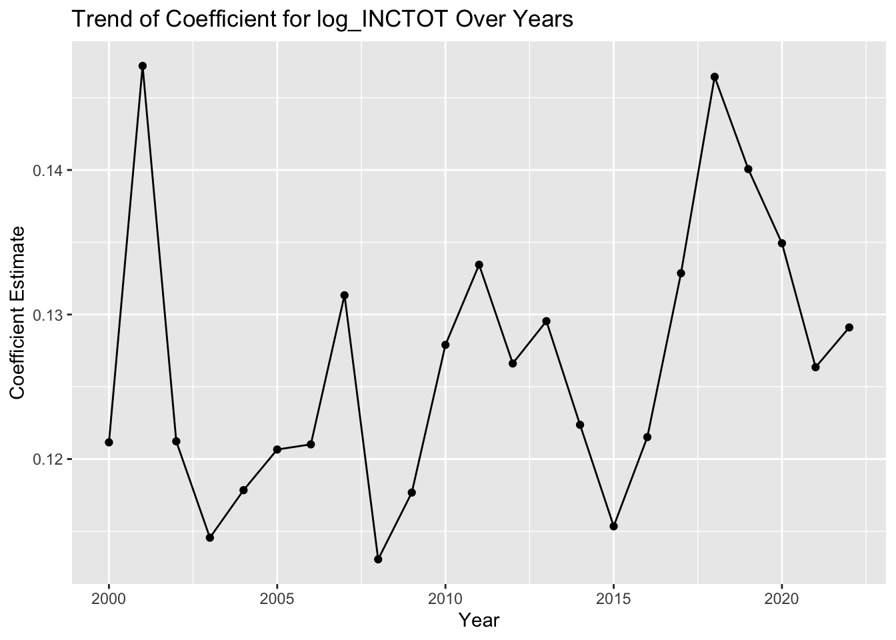
- Observations show peaks in coefficient estimates, notably in the early 2000s and around 2020, with subsequent troughs suggesting potential corrective periods.
- The coefficient trend exhibits cyclicity with no monotonic progression, featuring multiple peaks and valleys, implying a potential cyclical influence on the income-rent relationship.
- Coefficient estimates range within a tight interval, indicating a consistent strength of relationship across the dataset’s timespan.
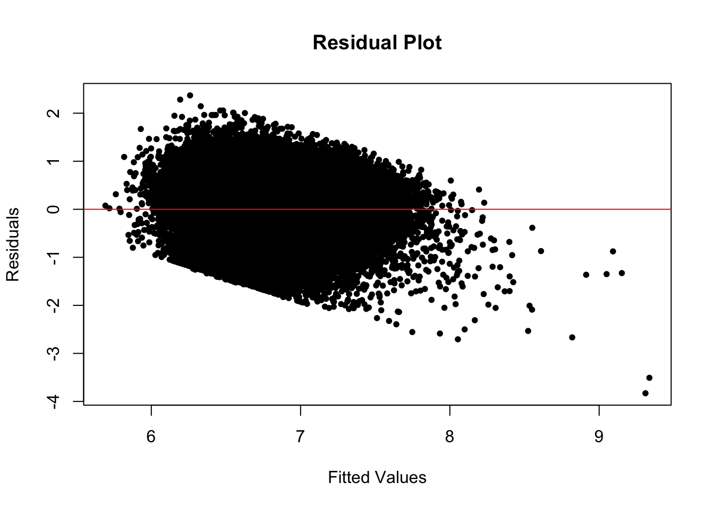
- R-squared values demonstrate time-bound variability, implying shifts in the model’s explanatory power from year to year.
- A recent sharp decline in R-squared highlights a potential reduction in predictive accuracy or a substantial data structure change.
Statistical Performance Assessment:
| YEAR | r.squared | adj.r.squared | sigma | statistic | p.value | df | logLik | AIC | BIC | deviance | df.residual | nobs |
|---|---|---|---|---|---|---|---|---|---|---|---|---|
| 2000 | 0.3004684 | 0.2734731 | 0.4224935 | 11.13038 | 0 | 23 | -333.323 | 716.6461 | 827.3891 | 106.3864 | 596 | 620 |
| 2001 | 0.2470440 | 0.2375703 | 0.4343406 | 26.07673 | 0 | 23 | -1071.364 | 2192.7289 | 2330.8294 | 344.8555 | 1828 | 1852 |
| 2002 | 0.2331442 | 0.2219811 | 0.4474190 | 20.88527 | 0 | 23 | -973.854 | 1997.7081 | 2132.2145 | 316.2903 | 1580 | 1604 |
| 2003 | 0.2465441 | 0.2370067 | 0.4480918 | 25.85020 | 0 | 23 | -1122.311 | 2294.6224 | 2432.5740 | 364.8287 | 1817 | 1841 |
| 2004 | 0.2503521 | 0.2402157 | 0.4474393 | 24.69849 | 0 | 23 | -1048.315 | 2146.6299 | 2282.9544 | 340.5435 | 1701 | 1725 |
| 2005 | 0.2578132 | 0.2537284 | 0.4519094 | 63.11557 | 0 | 23 | -2613.433 | 5276.8654 | 5435.4542 | 853.4443 | 4179 | 4203 |
| 2006 | 0.2886511 | 0.2846915 | 0.4463248 | 72.89924 | 0 | 23 | -2532.394 | 5114.7885 | 5273.0962 | 823.1186 | 4132 | 4156 |
| 2007 | 0.2579863 | 0.2539132 | 0.4657137 | 63.33896 | 0 | 23 | -2747.100 | 5544.2009 | 5702.8551 | 908.7660 | 4190 | 4214 |
| 2008 | 0.2473125 | 0.2433582 | 0.4633991 | 62.54309 | 0 | 23 | -2848.263 | 5746.5269 | 5906.2723 | 940.1263 | 4378 | 4402 |
| 2009 | 0.2549819 | 0.2512881 | 0.4705660 | 69.03019 | 0 | 23 | -3089.421 | 6228.8423 | 6390.0277 | 1027.2247 | 4639 | 4663 |
| 2010 | 0.2679043 | 0.2644022 | 0.4511145 | 76.49772 | 0 | 23 | -2997.845 | 6045.6891 | 6207.7645 | 978.4487 | 4808 | 4832 |
| 2011 | 0.2603548 | 0.2568985 | 0.4740125 | 75.32791 | 0 | 23 | -3313.745 | 6677.4909 | 6840.1493 | 1105.9138 | 4922 | 4946 |
| 2012 | 0.2771554 | 0.2739096 | 0.4600769 | 85.38670 | 0 | 23 | -3294.673 | 6639.3453 | 6802.9947 | 1084.1776 | 5122 | 5146 |
| 2013 | 0.2761514 | 0.2728593 | 0.4602770 | 83.88121 | 0 | 23 | -3255.114 | 6560.2281 | 6723.5597 | 1071.3503 | 5057 | 5081 |
| 2014 | 0.2739684 | 0.2708225 | 0.4612843 | 87.08596 | 0 | 23 | -3428.168 | 6906.3364 | 7070.8734 | 1129.4535 | 5308 | 5332 |
| 2015 | 0.2676026 | 0.2643909 | 0.4591722 | 83.32228 | 0 | 23 | -3363.339 | 6776.6777 | 6940.9176 | 1105.8510 | 5245 | 5269 |
| 2016 | 0.2617749 | 0.2585815 | 0.4688414 | 81.97435 | 0 | 23 | -3520.766 | 7091.5316 | 7256.1108 | 1168.7418 | 5317 | 5341 |
| 2017 | 0.2588462 | 0.2556947 | 0.4728262 | 82.13395 | 0 | 23 | -3627.601 | 7305.2017 | 7470.2079 | 1209.2611 | 5409 | 5433 |
| 2018 | 0.2877600 | 0.2847376 | 0.4738139 | 95.20847 | 0 | 23 | -3646.330 | 7342.6610 | 7507.7177 | 1216.7881 | 5420 | 5444 |
| 2019 | 0.2898507 | 0.2867566 | 0.4801230 | 93.68034 | 0 | 23 | -3621.724 | 7293.4472 | 7457.8479 | 1216.9048 | 5279 | 5303 |
| 2020 | 0.2820342 | 0.2778789 | 0.4948471 | 67.87314 | 0 | 23 | -2848.262 | 5746.5231 | 5903.8619 | 973.1280 | 3974 | 3998 |
| 2021 | 0.2677132 | 0.2643873 | 0.4841706 | 80.49233 | 0 | 23 | -3517.113 | 7084.2259 | 7247.5919 | 1187.1087 | 5064 | 5088 |
| 2022 | 0.2239915 | 0.2205238 | 0.5099087 | 64.59389 | 0 | 23 | -3842.513 | 7735.0255 | 7898.7961 | 1338.2554 | 5147 | 5171 |
- All model coefficients are statistically validated, with a noticeable exception in the MARSTSeparated category for the year 2022.
- R-squared values exhibit minor fluctuations over time, signifying a stable degree of explained variability in the response variable by the model.
- Adjusted R-squared values, marginally lower than the R-squared, adhere to expectations, considering model complexity relative to data volume.
- P-values indicate consistent statistical significance for the model’s predictors on an annual basis.
- Log-likelihood, AIC, and BIC values increment over time, which may indicate an improving model fit or increasing data variability.
- The trends in model deviance require additional context for clear interpretation, while a gradual decrease in df.residual suggests either an increase in model parameters or variations in data availability over time.
2. Longitudinal Log-Log Regression Model by Race
Model Overview:
- This model extended the 2022 dataset analysis to explore how the rent-income relationship for each racial group has evolved from 2000 to 2022.
- Trends over time for each race were charted to illustrate these dynamics.
- Similar to the 2022 model, the coefficients were found to be statistically significant and the residual plots falling within an acceptable range.
Model Inferences:
| YEAR | coef_American Indian or Alaska Native | coef_Black/African American | coef_Chinese | coef_Japanese | coef_Other Asian or Pacific Islander | coef_Other race, nec | coef_Three or more major races | coef_Two major races | coef_White |
|---|---|---|---|---|---|---|---|---|---|
| 2001 | 0.0044494 | NA | 0.0097707 | NA | 0.1221862 | 0.0818381 | NA | 0.1007001 | 0.1445229 |
| 2005 | -0.1728914 | 0.0873527 | 0.1326179 | NA | 0.0897322 | 0.0429701 | NA | NA | 0.1379574 |
| 2007 | 0.1239418 | 0.1115806 | NA | NA | 0.0864570 | 0.1019018 | NA | 0.0988822 | 0.1401784 |
| 2008 | 0.1662273 | 0.0717442 | NA | NA | 0.0495650 | 0.0811385 | NA | 0.0705536 | 0.1261771 |
| 2009 | -0.0290841 | 0.0982650 | 0.0462740 | NA | 0.0979882 | 0.1357880 | NA | 0.0883666 | 0.1215903 |
| 2011 | -0.0246266 | 0.1289264 | 0.1080701 | -0.3049829 | 0.1056626 | 0.0704745 | NA | 0.0950769 | 0.1434630 |
| 2012 | 0.0829896 | 0.0815911 | 0.1408589 | 0.2402733 | 0.0947194 | 0.0336927 | NA | 0.0447647 | 0.1477391 |
| 2013 | 0.1450099 | 0.1208850 | NA | 0.3074672 | 0.0719337 | 0.0944647 | NA | 0.1077284 | 0.1413223 |
| 2014 | -0.0806190 | 0.0774011 | 0.1243816 | 0.1948937 | 0.1704745 | 0.0192973 | -0.0246775 | 0.0501507 | 0.1423022 |
| 2015 | 0.2288886 | 0.0866523 | 0.1437636 | NA | 0.0588220 | 0.0124419 | -0.0798592 | 0.0240695 | 0.1366126 |
| 2016 | 0.0724100 | 0.1070357 | 0.0935354 | NA | 0.0892159 | 0.0831495 | NA | 0.1105840 | 0.1281357 |
| 2017 | 0.1140436 | 0.1154084 | 0.0120262 | 0.0758910 | 0.0610027 | 0.1443399 | NA | 0.0379656 | 0.1514833 |
| 2018 | 0.1443089 | 0.1216139 | 0.2833792 | NA | 0.1070153 | 0.0425257 | 0.3835364 | 0.1375949 | 0.1594088 |
| 2020 | 0.0264148 | 0.0821522 | 0.0947932 | NA | 0.1345643 | 0.1008466 | NA | 0.0531118 | 0.1628788 |
| 2021 | -0.0599569 | 0.0664240 | 0.1149156 | NA | 0.1242797 | 0.0334209 | -0.0382770 | 0.0856113 | 0.1649109 |
| 2022 | 0.0984965 | 0.0632937 | 0.2196783 | NA | 0.1033151 | 0.0390094 | 0.0722550 | 0.0800541 | 0.1637250 |
| 2000 | NA | 0.0358345 | NA | NA | NA | NA | NA | NA | 0.1459856 |
| 2002 | NA | 0.0994888 | NA | NA | NA | 0.1131498 | NA | NA | 0.1290758 |
| 2003 | NA | 0.1201889 | NA | NA | 0.0611945 | 0.0426896 | NA | -0.0781177 | 0.1278780 |
| 2004 | NA | 0.1245230 | 0.0048313 | NA | 0.0655594 | NA | NA | 0.0013052 | 0.1292762 |
| 2006 | NA | 0.1192481 | 0.0993890 | 0.4505390 | 0.1058852 | 0.0840827 | NA | NA | 0.1273188 |
| 2010 | NA | 0.0965021 | NA | -0.8670287 | 0.1104422 | 0.0597122 | NA | 0.0686506 | 0.1432963 |
| 2019 | NA | 0.1027066 | 0.2814538 | NA | 0.1331487 | 0.0892457 | NA | NA | 0.1464698 |
- Specific Trends:
Alaska Native: Shows minor fluctuations around zero, with both positive and negative coefficients, indicating inconsistent trends over the years.
American: This category has NA values, suggesting incomplete data, making it hard to discern a clear trend.
Chinese: Generally has higher positive coefficients compared to other groups, particularly noticeable in later years, indicating a strong positive association with income in those years.
Japanese: Has some missing values but otherwise presents mostly positive coefficients, with a notable spike in recent years.
Islander: Also features both positive and negative coefficients with considerable variability.
Other race, nec: Shows a mix of positive, negative, and NA values, making a clear trend difficult to establish.
Two or more races: This group generally has positive coefficients, with a few exceptions, suggesting a fairly consistent positive association with income.
Whites: Present a range of coefficients, mostly positive with some fluctuations, but generally indicate a positive association with income.
- Race Comparisons: Certain racial categories, like those identifying as Chinese and Japanese, tend to have higher coefficients, suggesting a stronger relationship with income than other races in the dataset. Conversely, the ‘Other race, nec’ category often has lower coefficients, implying a weaker association with income.
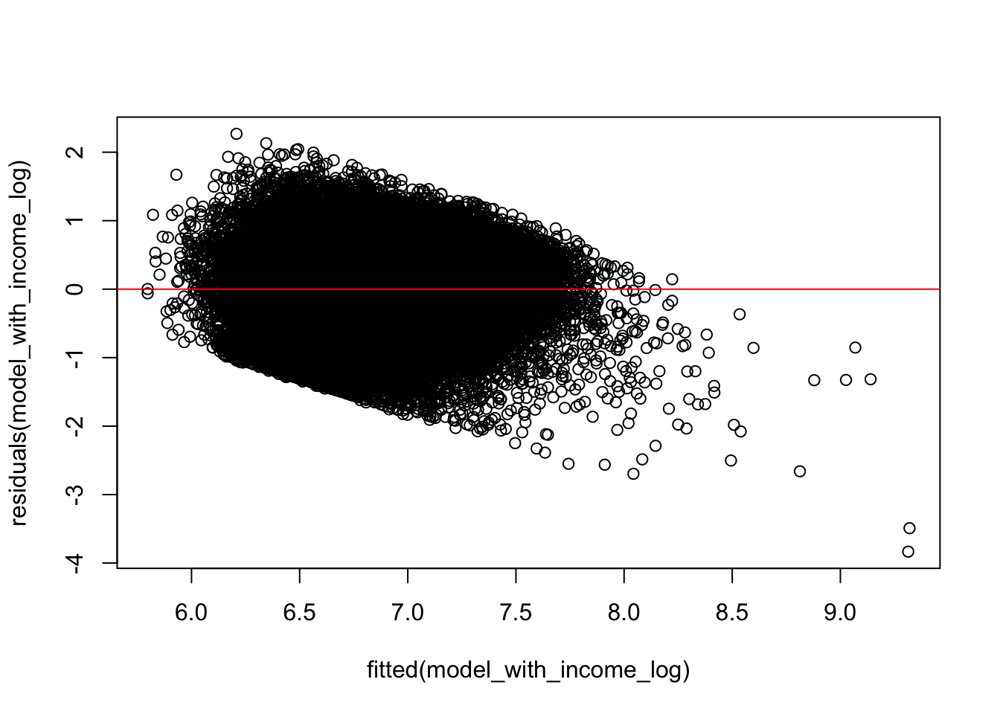
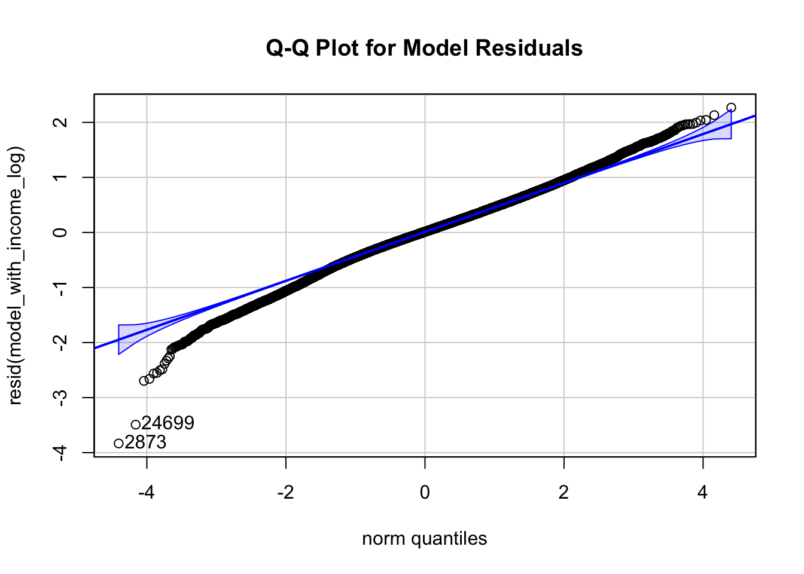
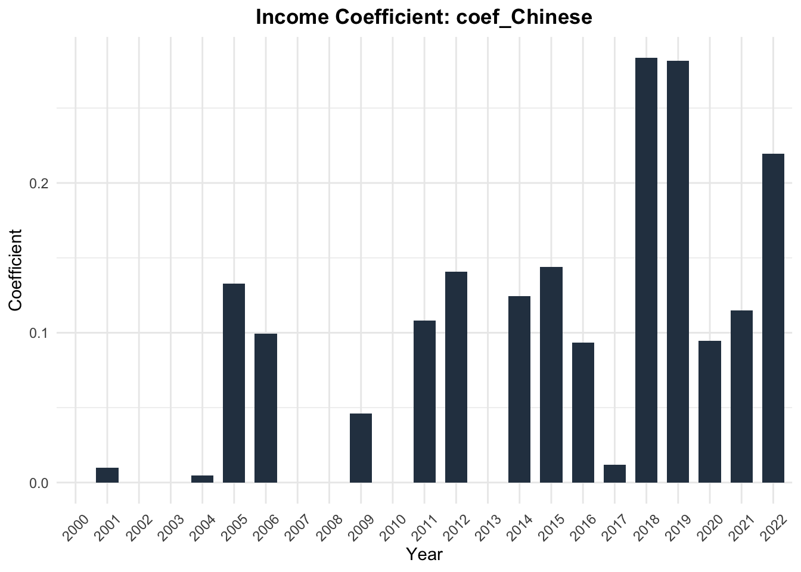
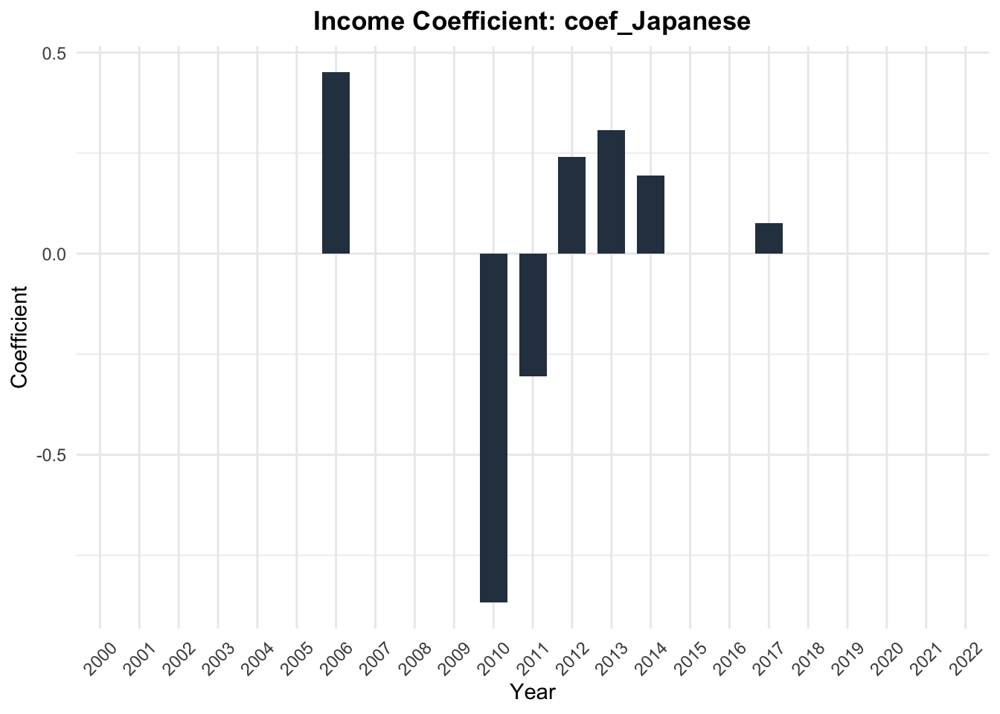
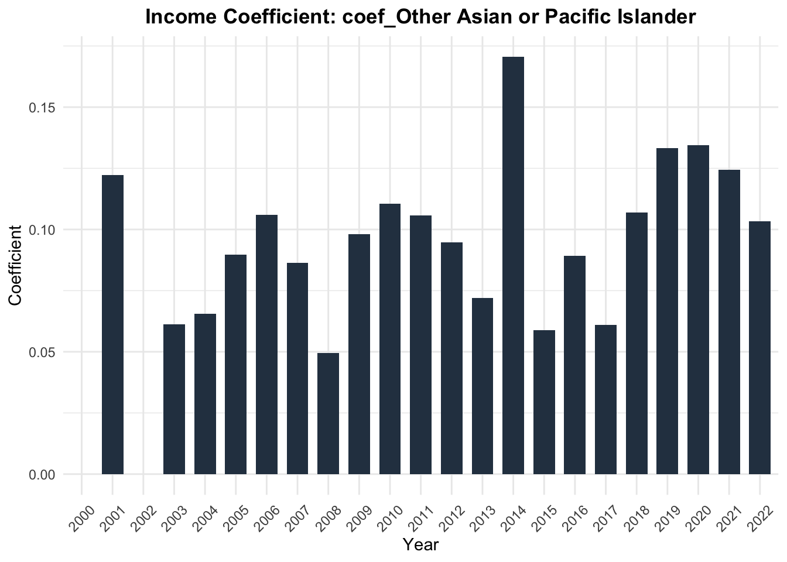
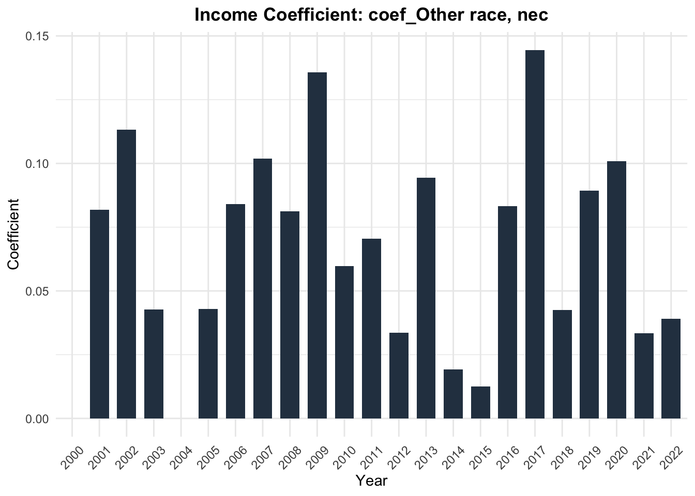
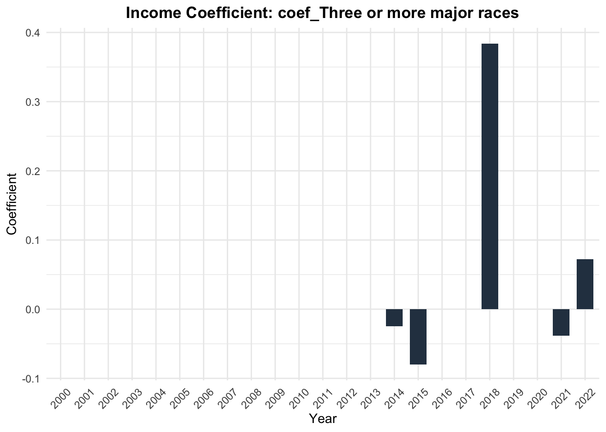
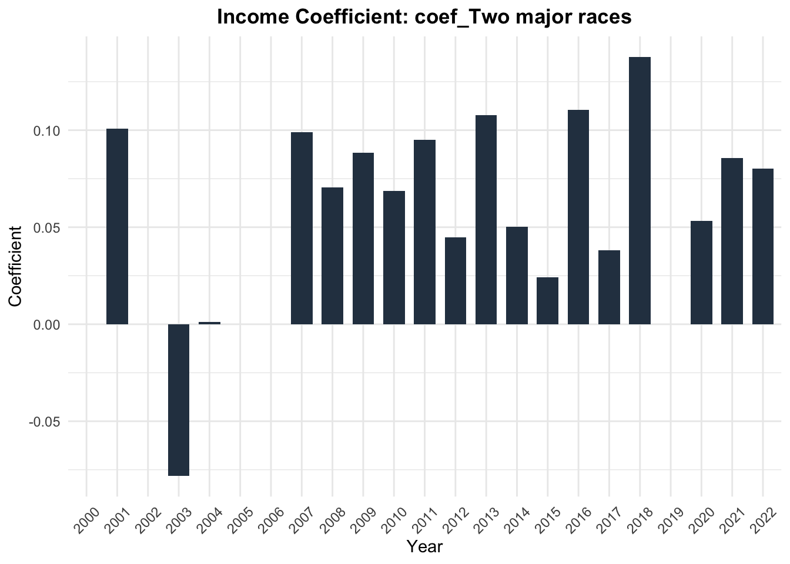
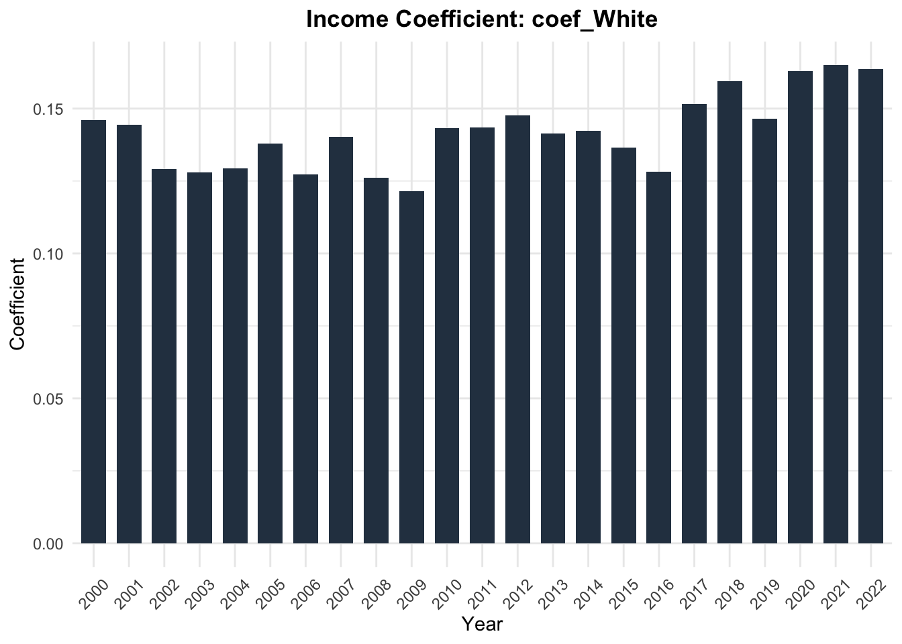
Statistical Performance:
log_inctot_p_values <- data_twenty_filtered_final %>%
group_by(RACE, YEAR) %>%
do({
model = lm(log_RENTGRS ~ log_INCTOT + KITCHEN + ROOMS + NFAMS + AGE + MARST + EMPSTAT + REGION_CLASSIFIED, data = .)
tidy(model)
}) %>%
ungroup() %>%
filter(term == "log_INCTOT") %>% # Filter to only include rows where the term is 'log_INCTOT'
select(RACE, YEAR, term, estimate, p.value) # Select only the relevant columns
# Print or view the results
print(log_inctot_p_values)# A tibble: 149 × 5
RACE YEAR term estimate p.value
<chr> <dbl> <chr> <dbl> <dbl>
1 American Indian or Alaska Native 2001 log_INCTOT 0.00445 0.983
2 American Indian or Alaska Native 2005 log_INCTOT -0.173 0.0485
3 American Indian or Alaska Native 2007 log_INCTOT 0.124 0.265
4 American Indian or Alaska Native 2008 log_INCTOT 0.166 0.0480
5 American Indian or Alaska Native 2009 log_INCTOT -0.0291 0.779
6 American Indian or Alaska Native 2011 log_INCTOT -0.0246 0.835
7 American Indian or Alaska Native 2012 log_INCTOT 0.0830 0.154
8 American Indian or Alaska Native 2013 log_INCTOT 0.145 0.0679
9 American Indian or Alaska Native 2014 log_INCTOT -0.0806 0.455
10 American Indian or Alaska Native 2015 log_INCTOT 0.229 0.0149
# ℹ 139 more rows- All showed to be statistically significant ### Discussion of the topic: Race is really a point that needs to explore. Thorugh the result and the visualization of the coefficient changes for each race, there is defintely different pattens showed.
3.Time series model
Rubric: On this page
You will
- Introduce what motivates your Data Analysis (DA)
- Which variables and relationships are you most interested in?
- What questions are you interested in answering?
- Provide context for the rest of the page. This will include figures/tables that illustrate aspects of the data of your question.
- Modeling and Inference
- The page will include some kind of formal statistical model. This could be a linear regression, logistic regression, or another modeling framework.
- Explain the ideas and techniques you used to choose the predictors for your model. (Think about including interaction terms and other transformations of your variables.)
- Describe the results of your modelling and make sure to give a sense of the uncertainty in your estimates and conclusions.
- Explain the flaws and limitations of your analysis
- Are there some assumptions that you needed to make that might not hold? Is there other data that would help to answer your questions?
- Clarity Figures
- Are your figures/tables/results easy to read, informative, without problems like overplotting, hard-to-read labels, etc?
- Each figure should provide a key insight. Too many figures or other data summaries can detract from this. (While not a hard limit, around 5 total figures is probably a good target.)
- Default
lmoutput and plots are typically not acceptable.
- Clarity of Explanations
- How well do you explain each figure/result?
- Do you provide interpretations that suggest further analysis or explanations for observed phenomenon?
- Organization and cleanliness.
- Make sure to remove excessive warnings, hide most or all code, organize with sections or multiple pages, use bullets, etc.
- This page should be self-contained, i.e. provide a description of the relevant data.